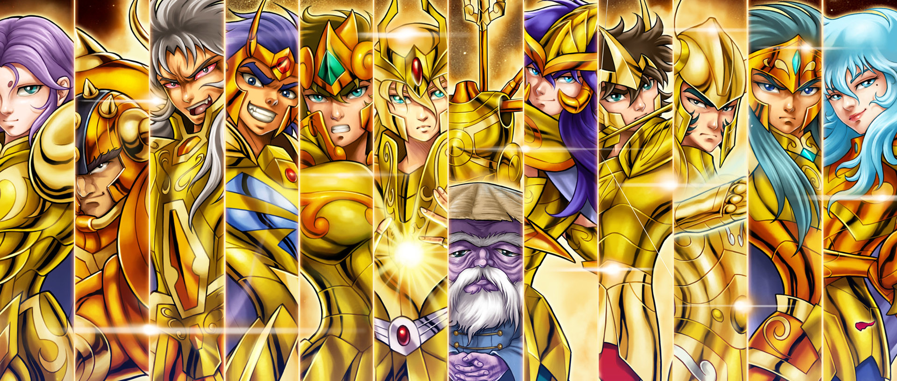

Cavaleiros de ouro!
Veja alguns dos cavaleiros de ouro, do anime cavaleiros do zodiaco.
Até em seu momento derradeiro, Saga é fiel à sua Casa, punindo a si mesmo com o próprio sacrifício.
'
Bio da desevolvedora